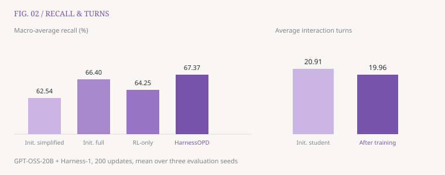

投稿状态：WWW 在投（尚未录用）。 更新于 2026 年 11 月 3 日。
问题：系统更强，模型也变强了吗？
一个搜索 Agent 的表现，不只取决于模型。证据核验、上下文管理和多跳关系组织等 Harness 组件，也能帮助它做出更好的决策。但一旦撤掉这些组件，收益可能随之消失。
HarnessOPD 关注的是：能否把高级 Harness 带来的行为优势，部分留在模型参数里，让模型部署时只使用简化 Harness？ 这里的“简化”仍保留完成任务所需的基础工具，并不是让模型脱离工具独立工作。
方法：向强执行过程学习，而非照搬工具调用
教师与学生使用相同模型骨干，区别在于可用的 Harness。学生始终在简化 Harness 下采样；教师在学生状态的隔离副本上运行高级组件，提供额外指导。

关键难点是：教师能做的操作，学生未必能执行。 我们采用两条对齐路径：
- 投影（Project）：能映射的高级组件效果，转换成学生可执行的基础动作。
- 延后（Defer）：无法直接映射的操作，由教师私下继续执行，直到得到对保存的学生状态仍然兼容的基础动作。
这些分支不会改写学生的真实轨迹。训练将对齐后的 on-policy 蒸馏与结果强化学习结合：前者提供局部决策指导，后者依据整段任务表现反馈。部署时移除教师的高级组件。
结果：简化部署下，召回更高、交互更少
在 GPT-OSS-20B + Harness-1 设置中，经过 200 次训练更新，HarnessOPD 的四项基准宏平均召回率达到 67.37%，高于初始简化系统的 62.54%，也超过初始完整 Harness 参照的 66.40%；平均交互轮数由初始学生的 20.91 降至 19.96。

这里的召回率衡量最终证据集合保留了多少相关文档，不是答案字符串准确率；交互轮数也不等同于时延、token 用量或训练成本。四项基准为 BrowseComp+、LongSealQA、FRAMES 与 HotpotQA。
同为 200 次更新，RL-only 的宏平均召回率为 64.25%，说明对齐后的教师指导提供了额外收益。行为分析还观察到：高级组件撤掉后，模型仍能通过基础工具表现出核对证据、组合多跳信息和按证据决定何时停止的行为。
这项工作说明了什么？
高级 Harness 可以成为临时的训练教师，而部分有用决策可以在更简单的部署接口下保留下来。当前证据来自一个模型与 Harness 设置，并不意味着所有组件都已被完整内化，也不代表任意任务上都能成立。
依据 2026-10-25 版本稿件《HarnessOPD: Internalizing Agent Harness Capabilities via On-Policy Distillation》整理。投稿状态由作者提供。相关研究代码见 Capability Evolution ↗。
宋子骏. HarnessOPD：把高级 Harness 的行为优势留在模型里. Research Notes, 2026-11-03. https://zijunsong.github.io/posts/harnessopd.html